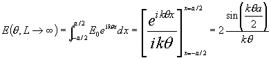
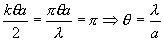

Härledning av diffraktionsmönstret från enkelspalt i fraunhoferdiffraktion
Om vi antar en spalt med bredden a och ett mönster som betraktas i oändligheten får vi

Ser man detta som en funktion av vinkeln får man ett brett maximum runt q=0 och första nollställe vid

och små-maxima däromkring